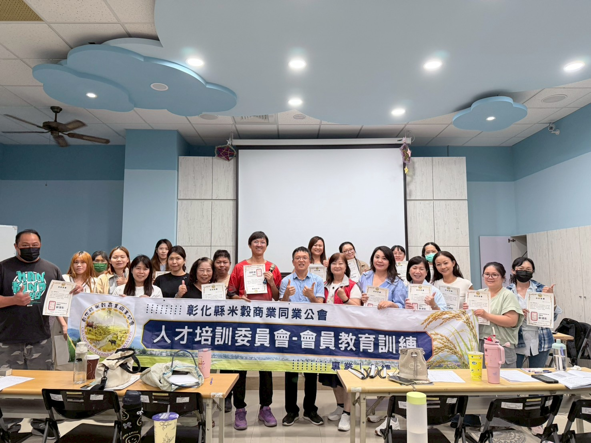
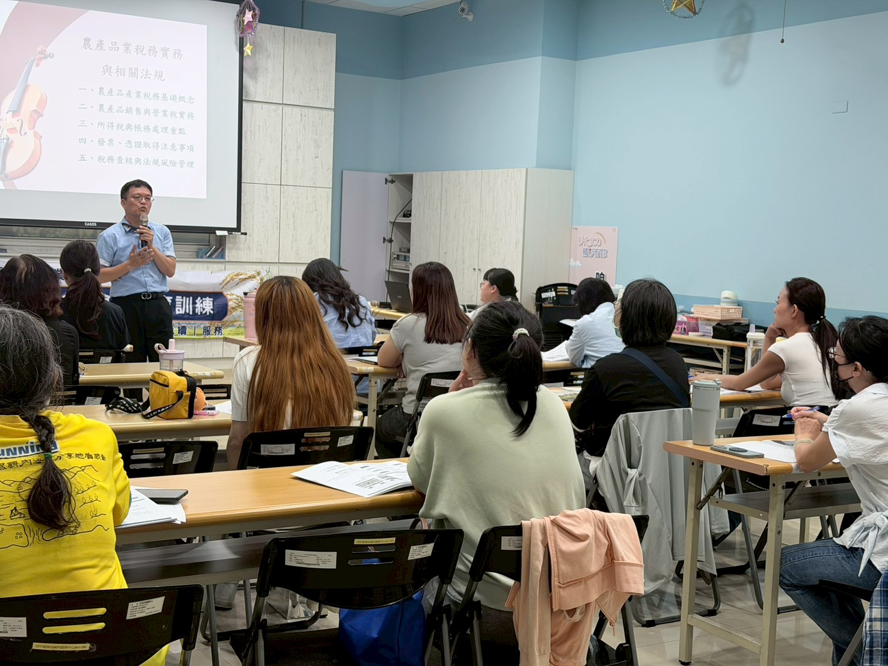
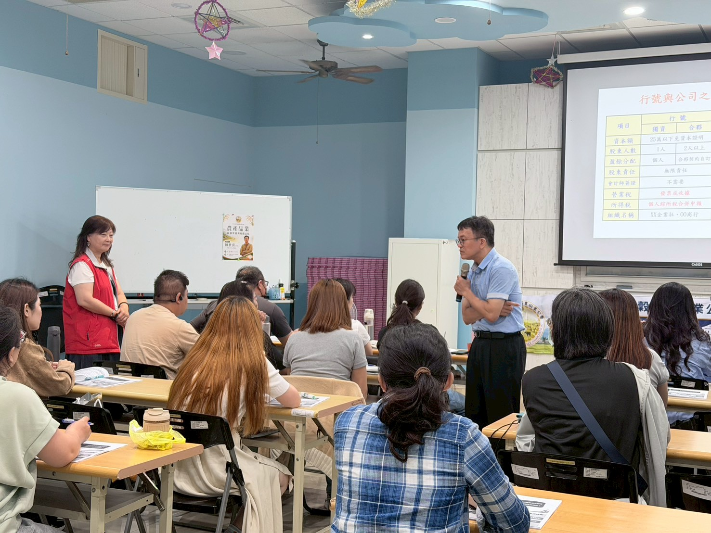
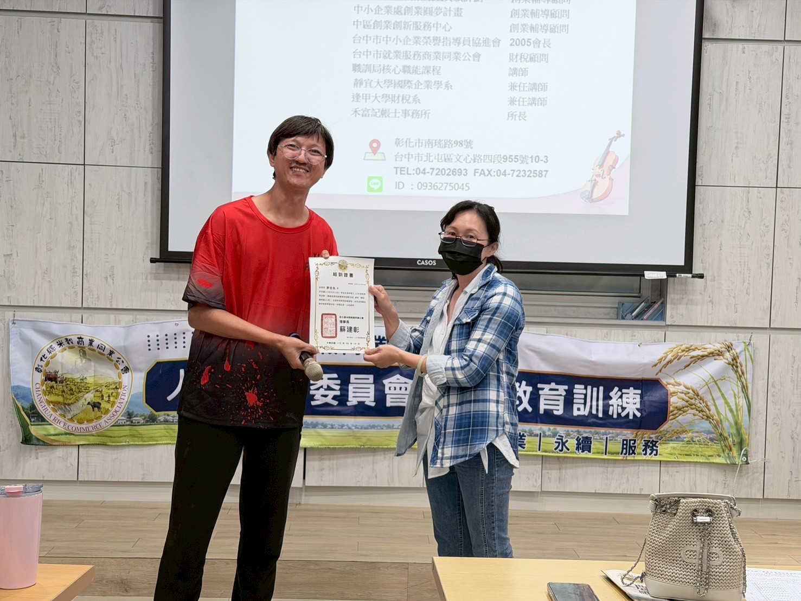
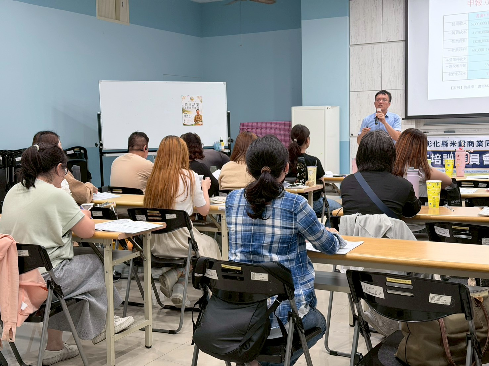

🎓
輔導會員提升產業專業技能，以強化產業競爭力。
本會持續規劃農糧產業教育訓練課程，強化農糧產業經營能力、專業技術與競爭力。
為配合政府推動產業人才培育政策，並協助本會推動農糧產業相關教育訓練、專業技能培育及產業發展等業務之規劃與執行，特成立「人才培訓委員會」。
提升產業專業技能，以強化產業競爭力。
促進農糧產業技術傳承與專業能力提升。
整合產業資源，推動農糧產業永續發展。
願景：促進農糧產業健全發展，整合產業資源並建立系統化人才培育機制，成為推動農糧產業發展與人才培育的重要平台。
使命：配合政府推動農糧產業政策與人才培育計畫，協助會員提升專業技術能力，並透過教育訓練與產業交流活動，促進農糧產業升級與永續發展。
核心價值：專業、永續、服務。
秉持本會章程宗旨、核心價值及產業發展需求，規劃推動農糧產業相關教育訓練，培育農糧產業專業人才，提升產業整體競爭力，並促進農糧產業永續發展。
本會秉持專業、品質、實務與持續改善之理念，提供符合產業需求且具實務導向之教育訓練課程，協助會員提升專業能力與產業競爭力。
課程依會員產業需求、產業發展趨勢與年度訓練規劃推動。
農產品加工、米製品加工、食品加工技術及食品安全衛生管理。
米食料理、餐飲實務操作、健康飲食與國產稻米多元應用。
農產品行銷策略、品牌經營、通路拓展、數位行銷、創業規劃與門市經營。
農產品業稅務實務與相關法規。課程詳細資料依公會正式公告為準。




